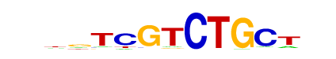

| p-value: | 1e-431 |
| log p-value: | -9.937e+02 |
| Information Content per bp: | 1.606 |
| Number of Target Sequences with motif | 5151.0 |
| Percentage of Target Sequences with motif | 33.82% |
| Number of Background Sequences with motif | 6119.8 |
| Percentage of Background Sequences with motif | 18.63% |
| Average Position of motif in Targets | 53.7 +/- 20.3bp |
| Average Position of motif in Background | 50.5 +/- 36.7bp |
| Strand Bias (log2 ratio + to - strand density) | 10.0 |
| Multiplicity (# of sites on avg that occur together) | 1.15 |
| Motif File: | file (matrix) reverse opposite |
| Rank | Match Score | Redundant Motif | P-value | log P-value | % of Targets | % of Background | Motif file |
| 1 | 0.845 | 1e-414 | -954.845141 | 17.58% | 7.00% | motif file (matrix) | |
| 2 | 0.876 | 1e-390 | -900.248824 | 17.98% | 7.49% | motif file (matrix) | |
| 3 | 0.955 | 1e-356 | -821.607855 | 24.62% | 12.57% | motif file (matrix) | |
| 4 | 0.931 | 1e-313 | -723.010620 | 22.65% | 11.70% | motif file (matrix) | |
| 5 | 0.938 |  | 1e-186 | -429.431886 | 22.14% | 13.46% | motif file (matrix) |
| 6 | 0.845 | 1e-158 | -364.703229 | 12.28% | 6.34% | motif file (matrix) | |
| 7 | 0.756 | 1e-146 | -336.597102 | 21.05% | 13.43% | motif file (matrix) | |
| 8 | 0.616 | 1e-106 | -245.495691 | 0.47% | 0.01% | motif file (matrix) | |
| 9 | 0.781 | 1e-47 | -109.608801 | 14.81% | 10.95% | motif file (matrix) | |
| 10 | 0.692 | 1e-28 | -65.841803 | 11.68% | 8.98% | motif file (matrix) | |
| 11 | 0.698 | 1e-8 | -19.552489 | 2.20% | 1.58% | motif file (matrix) |